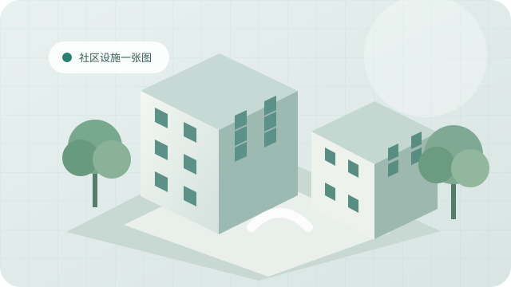
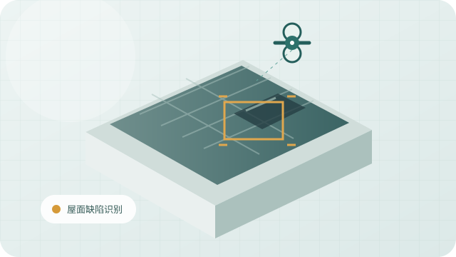

城市设施隐患线索
您来发现，我们来核查
发现建筑或社区设施异常，可拍照提交线索，随时查询处理进度。
非紧急事项反映渠道
如遇紧急危险，请优先远离现场并联系属地应急部门。本平台不替代紧急求助。
REPORT TRACKING
查询处理进度
输入提交成功后获得的报告编号。
编号仅用于查询本人提交的线索状态
尚未查询
查询结果将在这里显示，仅包含报告类型、状态与反馈。
ABOUT THE SERVICE
关于公众服务
让每一条市民线索都被认真核查。

共建设施健康防线
公众服务用于收集城市设施异常线索。提交后，工作人员将结合现场核查情况更新处理状态与反馈。
服务说明
无需注册登录，凭报告编号查询。
照片与位置可按实际情况选择提供。
不公开内部缺陷、专家意见与建筑敏感信息。
请勿提交与设施隐患无关的个人信息。
本地演示环境 · 规则待专家评审
平台提供 AI 辅助评估与线索流转演示，不构成正式安全鉴定。